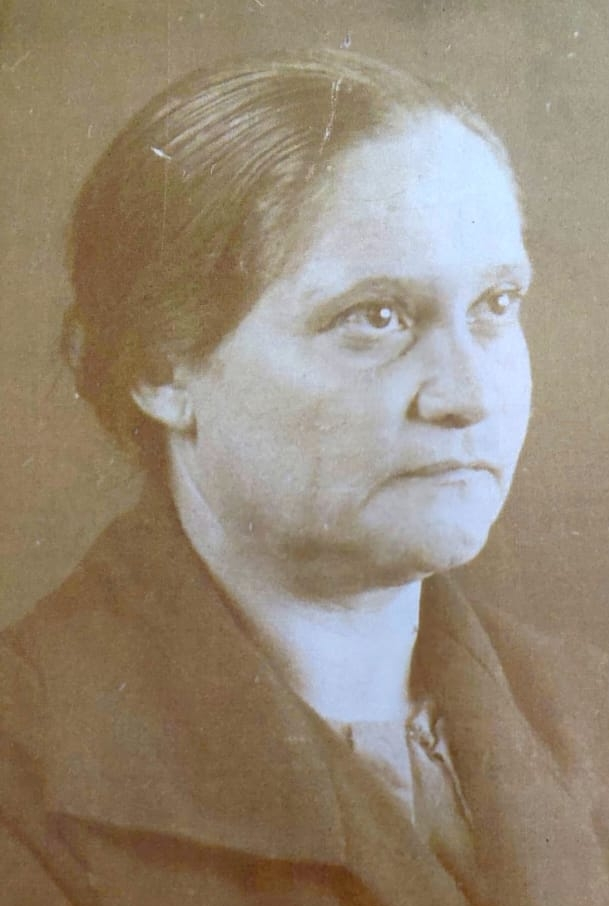
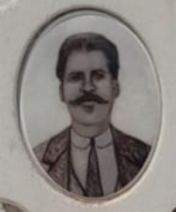
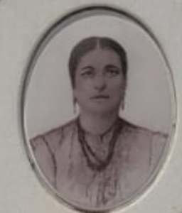
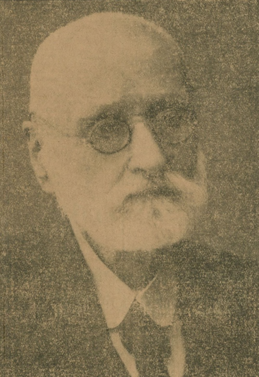
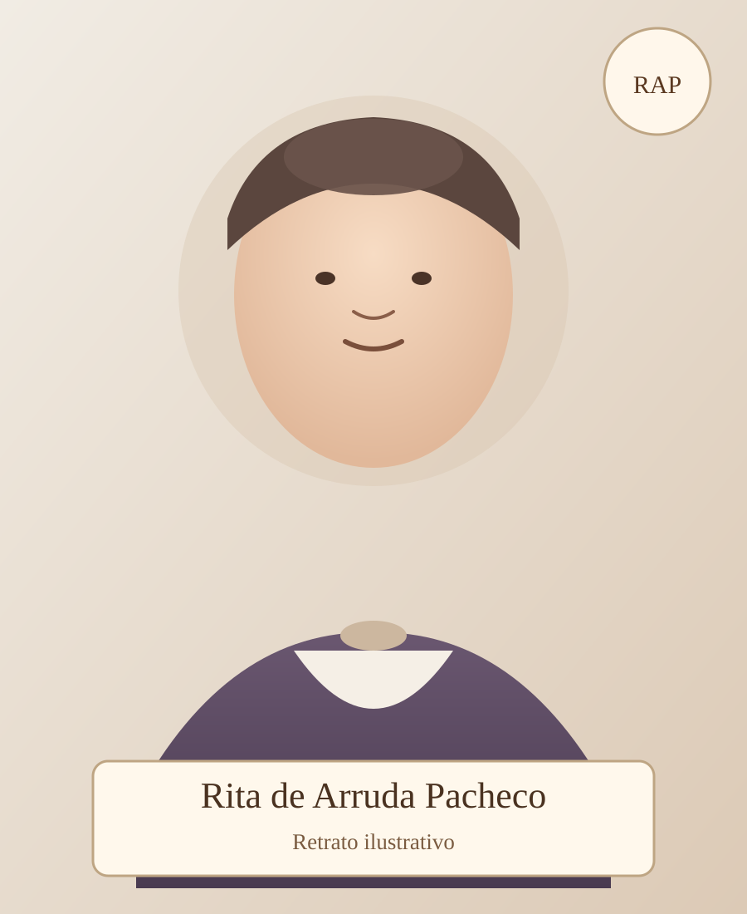

Da base (bisneta) às raízes da família.
Geração 1 — Bisneta (1 possível nesta geração)
Expandir ▲
Geração 2 — Pais (2 possíveis nesta geração)
Expandir ▲
Geração 3 — Avós (4 possíveis nesta geração)
Expandir ▲
Edson Andrade D'Ávila
Avô — Ramo Paterno
ID: 0311
Saiba mais
Flavio Mello
Avô — Ramo Materno
ID: 0303
Saiba mais
Geração 4 — Bisavós (8 possíveis nesta geração)
Expandir ▲
Orlando D'Ávila
Bisavô — Ramo Paterno
ID: 0497
Saiba mais
Janete Andrade D'Ávila
Bisavó — Ramo Paterno
ID: 0498
Saiba mais
João Bonafe Filho
Bisavô — Ramo Paterno
ID: 0495
Saiba mais
Clea Christofoletti Bonafe
Bisavó — Ramo Paterno
ID: 0496
Saiba mais
Flavio Olivette Mello
Bisavô — Ramo Materno
ID: 0403
Saiba mais
Teresinha A. C. Mello
Bisavó — Ramo Materno
ID: 0404
Saiba mais
Antonia Maria
Bisavó — Ramo Materno
ID: 0402
Saiba mais
Geração 5 — Trisavós (16 possíveis nesta geração)
Expandir ▲
PAI DO ORLANDO 0497
Trisavô — Ramo Paterno
ID: 0597
Saiba mais
Mae do Orlando / Trisavo
Trisavó — Ramo Paterno
ID: 0598
Saiba mais
Pai da Janete / Trisavo
Trisavô — Ramo Paterno
ID: 0595
Saiba mais
Mae da Janete / Trisavo
Trisavó — Ramo Paterno
ID: 0596
Saiba mais
Pai do joao/ Trisavo
Trisavô — Ramo Paterno
ID: 0593
Saiba mais
mae do joao/ Trisavo
Trisavó — Ramo Paterno
ID: 0594
Saiba mais
Pai da clea / Trisavo
Trisavô — Ramo Paterno
ID: 0591
Saiba mais
mae da clea / Trisavo
Trisavó — Ramo Paterno
ID: 0592
Saiba mais
Pai do Flavio Oilvete 0403/ Trisavo
Trisavô — Ramo Paterno
ID: 0589
Saiba mais
mae do flavio oliveti/ Trisavo
Trisavó — Ramo Paterno
ID: 0590
Saiba mais
Pai da Terezinha / Trisavo
Trisavô — Ramo Paterno
ID: 0587
Saiba mais
mae da terezinha / Trisavo
Trisavó — Ramo Paterno
ID: 0588
Saiba mais
Marcelo Pizzirani
Trisavô — Ramo Materno
ID: 0501
Saiba mais
Ana Cristina
Trisavó — Ramo Materno
ID: 0502
Saiba mais
Ezequiel Alves da Cunha
Trisavô — Ramo Materno
ID: 0503
Saiba mais
Helena Ferraz Pacheco
Trisavó — Ramo Materno
ID: 0504
Saiba mais
Geração 6 — Tetravós (32 possíveis nesta geração)
Expandir ▲
Nicola Pizzirani
Tetravô — Ramo Materno
ID: 0601
Saiba mais

Maria Mazzini
Tetravó — Ramo Materno
ID: 0602
Saiba mais
Henrique Lienhardt
Tetravô — Ramo Materno
ID: 0603
Saiba mais

Ana Petru
Tetravó — Ramo Materno
ID: 0604
Saiba mais
Aquilino Pacheco Filho
Tetravô — Ramo Materno
ID: 0605
Saiba mais
Antonieta Silveira
Tetravó — Ramo Materno
ID: 0606
Saiba mais
Jose Alves da Cunha
Tetravô — Ramo Materno
ID: 0607
Saiba mais

Antonia Marques
Tetravó — Ramo Materno
ID: 0608
Saiba mais
Geração 7 — Pentavós (64 possíveis nesta geração)
Expandir ▲
Alessandro Pizzirani
Pentavô — Ramo Paterno
ID: 0703
Saiba mais

Maria Piazzi Pizzirani
Pentavó — Ramo Paterno
ID: 0704
Saiba mais

Luiz Mazzini
Pentavô — Ramo Paterno
ID: 0701
Saiba mais

Beatriz Mazzini
Pentavó — Ramo Paterno
ID: 0702
Saiba mais

Pai de Antonieta Silveira
Pentavô — Ramo Paterno
ID: 0707
Saiba mais

Mãe de Antonieta Silveira
Pentavó — Ramo Paterno
ID: 0708
Saiba mais

Aquilino José Pacheco
Pentavô — Ramo Materno
ID: 0705
Saiba mais

Rita de Arruda Pacheco
Pentavó — Ramo Materno
ID: 0706
Saiba mais
Geração 8 — Hexavós (128 possíveis nesta geração)
Expandir ▲
Firmiano Botto Pacheco
Hexavô — Ramo Materno
ID: 0801
Saiba mais

Maria Luiza Costa Pacheco
Hexavó — Ramo Materno
ID: 0802
Saiba mais